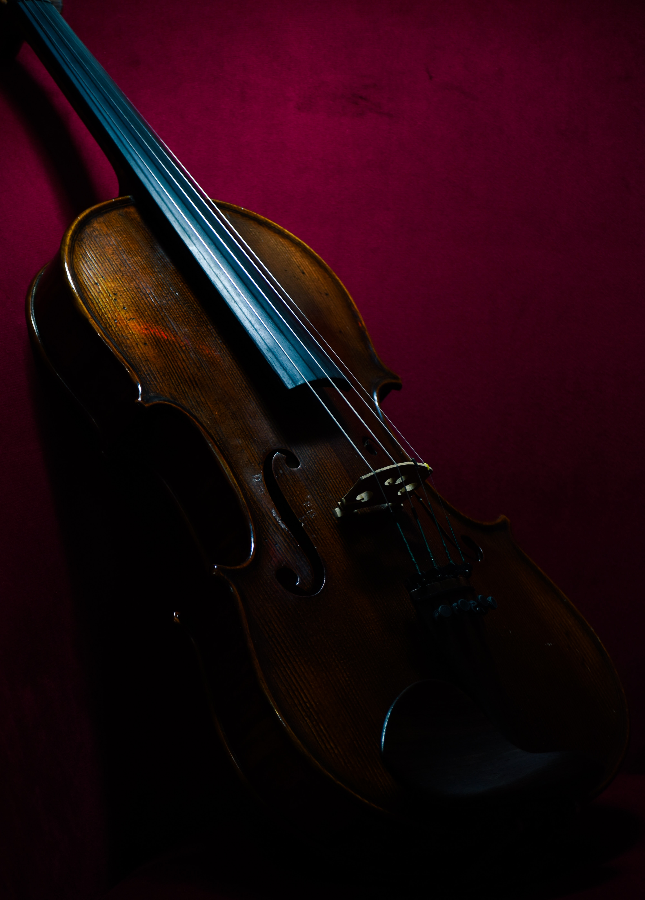
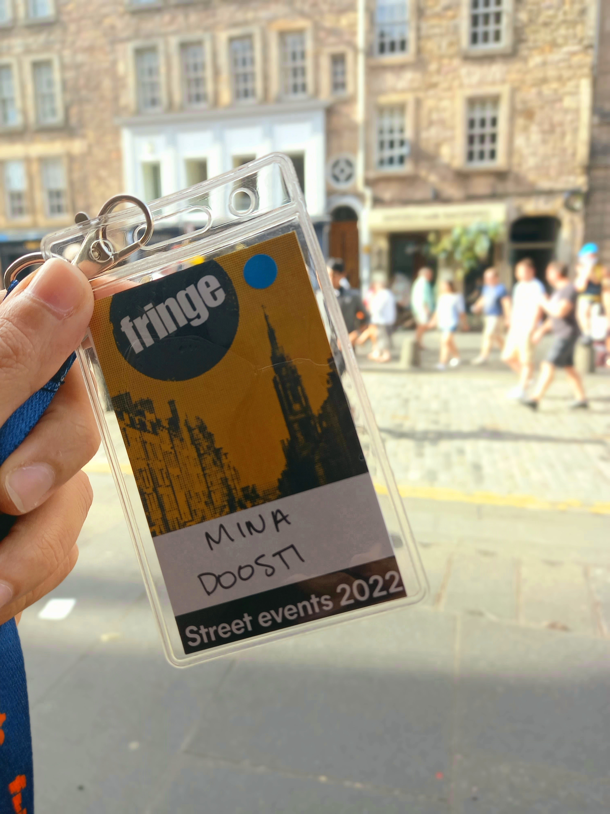
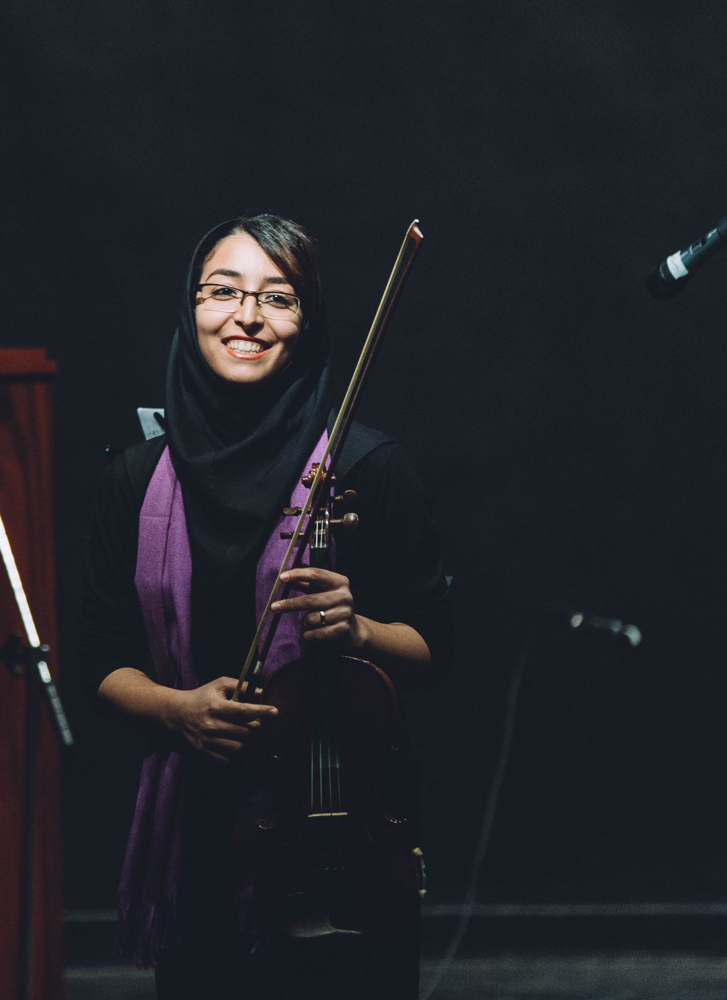
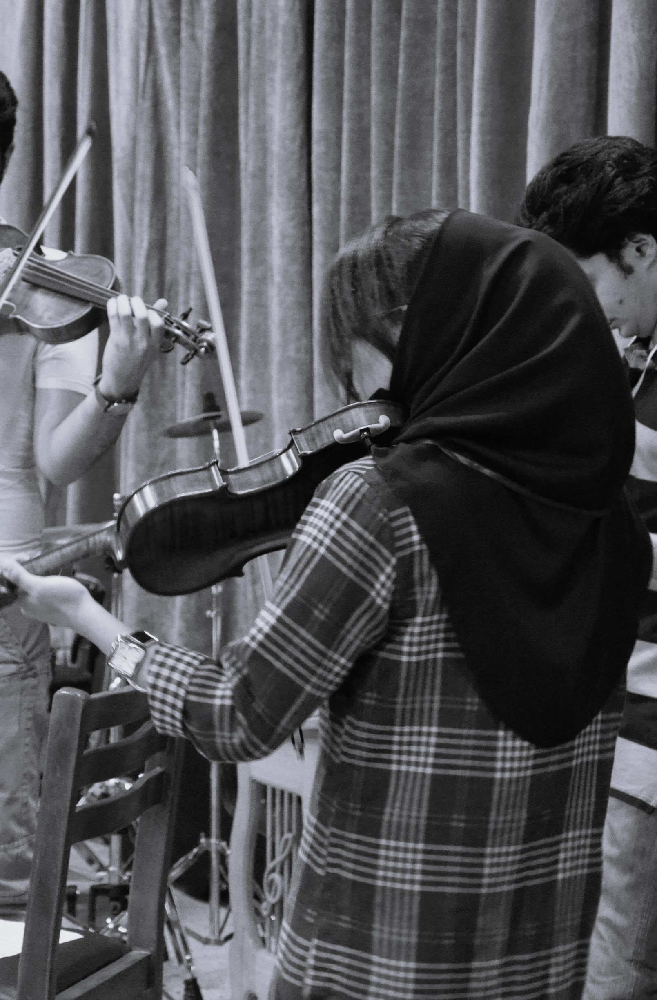
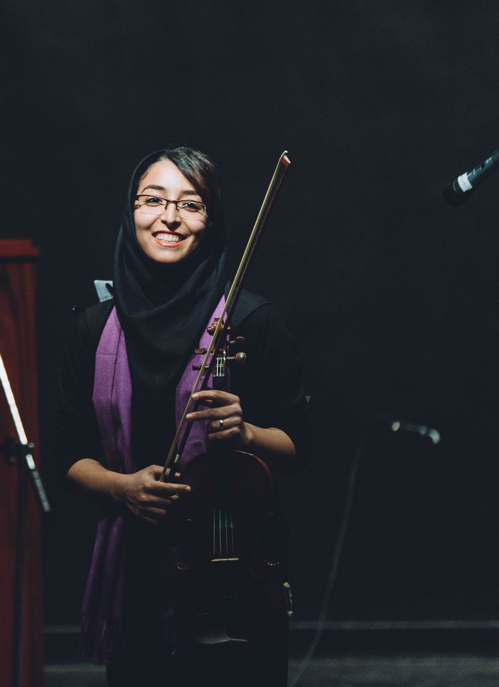
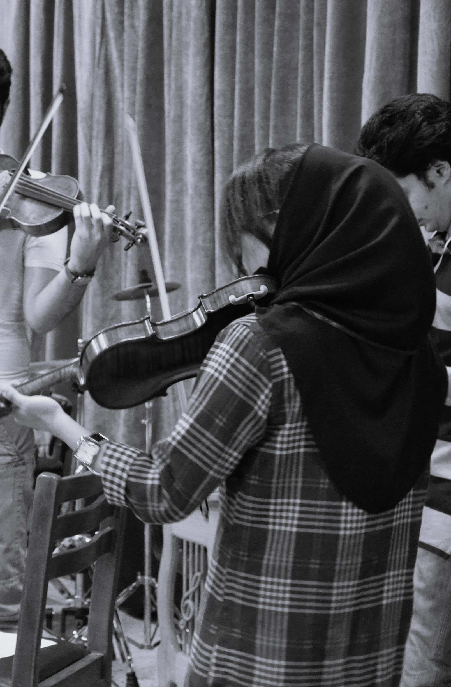

Alternative lives (or what else I do outside research)
Life, in my view, would be too boring if confined to a singular definition or career title. Here I introduce you to the alternative versions of myself, but only those that exist within the same timeline as me. These versions of "me" find joy in doing things outside science with the time I have left for them to exist. They are the versions that, for better or worse, missed the opportunity to replace the researcher version completely. If you want to meet them, here we go...
The one who is obsessed with music...
Music is a true passion and love, so this is the version that almost won! I love drowning myself in a good piece of music, playing music, and making music. I find almost every aspect of music fascinating and enjoyable.
What do I play?
My first instrument is the violin. I have been playing the violin for a very long time (from the age of 10-11). Although I have not been consistently practising it all these years, I never let it go either. Like many violinists, I started and trained as a classical violin player, but later on, I ventured into other styles and genres of music. Other than classical, I play folk, gipsy, rock, traditional Iranian music, nordic, OSTs and whatever sounds good to me on violin. Lately, I've been trying to learn jazz violin, but I'm still terrible at that.
Meet Nyx, my beautiful girl
I enjoy performing and jamming with other musicians, and I love doing improv playing. Back in Iran, I've been playing in gigs and festivals at the university and other venues. I have also played as a guest performer with a band at a national music festival in Iran in 2012. In Edinburgh, I performed as a street performer in 2022, as a part of the Edinburgh Fringe Festival. If you visit Edinburgh during Fringe, you might catch me playing here and there.
Here are some photos of my performances.
 

Other than the violin, I play the keyboard (although in a not-so-great and self-taught way), and I have just started learning to play guitar! I'm enjoying this new trip!
What do I listen to?
Almost everything! I don't limit myself to one specific genre or style. I could find beautiful pieces of music in almost all genres of music (maybe pop is at the bottom of the list), from classical to rock and metal, to the traditional and folk music of different regions and countries, to jazz and blues, you name it! But these days, I'm more into progressive rock and progressive metal. So I think it would be useless to give a never-ending list of the songs and bands that I like here. But maybe I can introduce you to some bands and musicians that you might not know and which I think they're great! I'll try to expand the list from time to time with new discoveries.
- Kahtmayan - An Iranian metal/trash metal band from Tehran. Amazing musicians with unique captivating metal music combining it with a taste of Iranian and Eastern folk. I recommend listening to their album Exir (2009) and their latest double album Resurrection (1&2) 2022.
- Kayhan Kalhor - He's the maestro of the Iranian traditional instrument, kamancheh, and a three-time Grammy winner for Best Traditional World Music. Keyhan Kalhor is of course a very respected and famous musician in Iran and also internationally recognised, but if you're not from Iran, or a world-music fan, you still might not have heard him. Well, you should! He is just mesmerising. I suggest starting with the album "I will not stand alone".
- Wardruna - They're a Norwegian music group playing folk Nordic music with Nordic historical and traditional instruments. Best songs to me are: "Kvitravan", "Helvenge", and "Lyfjaberg".
- Archive - One of my favourite bands from London! Their music style spans electronic, progressive rock, trip-hop, avant-garde, and some other things. I think they're masters of creating absolutely unique and sometimes weird songs with different layers and textures of sounds. I find most of their albums great, so I don't find it fair to point at one or two.
- Riverside - A Polish progressive rock/metal band from Warsaw which I really like. Their vocalist is also in the band Lunatic Soul, which is yet another great band to listen to. I'm biased to say "Second Life Syndrome" is their best album followed by "Wasteland".
- Gazpacho - They're a progressive rock and some say art rock band from Oslo. Their style of music is like their name, a weird mixture, like a weird soup! But I find them fun to listen to from time to time.
- Khusugtun - is a Mongolian band. They play traditional Mongolian instruments and do throat singing. Also, their singer, Batzorig Vaanchig, is the one who sang "The Beautiful Steppe" (from the Marco Polo series)
- The Hu - Another Mongolian band, this time folk-metal! They're not just interesting musically but also fun to watch.
What kind of music I make?
I make music sometimes. Sometimes it's just a piece for violin, but more recently, I'm trying to learn how to produce music with music production software. I mostly use GarageBand and a bit of Cakewalk for that. I haven't put any of my songs on public platforms (not yet at least, I'm still shy about it) so my only loyal listeners are my poor close friends.